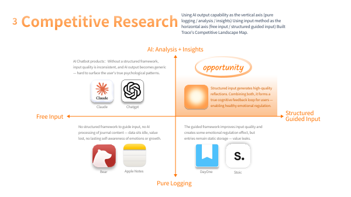
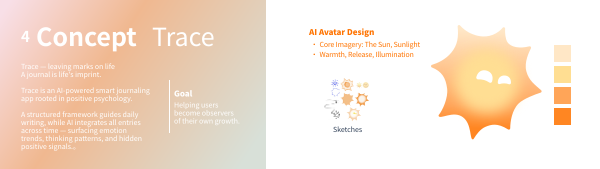
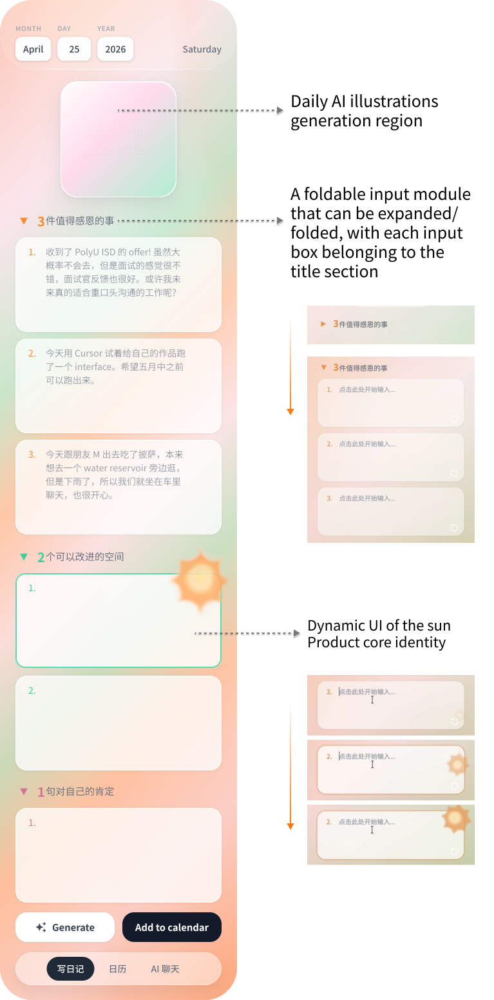

1. Inspiration & Research



Trace is an AI diary app grounded in Positive Psychology. It turns daily reflection into a continuous self-awareness system, supporting personal growth and emotional repair.

Trace product walkthrough video


Emotional regulation is a frequent, real, yet often overlooked daily need. Under high-pressure conditions (studying abroad, application season, seasonal depression peaks), users often hit emotional lows—and white-knuckling through them with willpower alone isn't sustainable. Users need a long-term external regulation tool they can rely on.
Specific pain points include:
Trace's goal isn't to "solve" users' emotional problems—it's to provide a sustainable self-regulation system:
POST /api/scratch-summary (Gemini text); a source modal shows the corresponding diary fragment.
/api/emotion-trend and /api/hidden-positive-signals respectively. The server calls LLMs: Emotion Trend returns a sequence of 1–10 daily scores; Hidden Positive Signals returns a long-form text insight. Both prefer Claude (requires Anthropic API
Key); on failure or missing key, automatically falls back to Gemini. Results display as conversation cards in the AI Chat tab.
POST /api/chat; the current server uses a Gemini text model for full-message generation (requires
GEMINI_API_KEY in env).
Each interface corresponds to the numbered steps below; the overall design goal is to go from first entry to a meaningful reflection in one session. Left → right: Diary | Calendar | AI Chat.


This section only covers product-level visual and information architecture principles. Specific component implementation, states, and engineering trade-offs are in the timeline section "3. Frontend Design" below to avoid repetition.
sun-canvas.js) uses Canvas 2D +
requestAnimationFrame frame-by-frame rendering, triggered on input focus.
http service: hosts static pages from the same origin + REST-style JSON API; key management and model selection happen on the server side; the frontend only consumes JSON.
AI Model Routing & Fallback Strategy: the table below lists models used and fallback strategies by capability and endpoint.
| Capability | Endpoint | Primary | Fallback / Notes |
|---|---|---|---|
| AI Chat (open follow-up · conversational completion) | /api/chat |
Gemini (text chain) | — |
| Diary · (2) Daily AI Illustration (Gratitude → Imagery) | /api/generate-image |
Gemini Image | — |
| Calendar · (2) Daily Scratch Card | /api/scratch-summary |
Gemini (text chain) | — |
| Calendar · (3) Range AI Analysis — Emotion Trend | /api/emotion-trend |
Claude (Anthropic model chain) | Falls back to Gemini if no key or chain fails; uses Gemini directly when only Gemini key is configured |
| Calendar · (3) Range AI Analysis — Hidden Positive Signals | /api/hidden-positive-signals |
Claude streaming | Falls back to Gemini pseudo-streaming on failure; falls back to rule-based copy on further failure |
"Text chain" means multiple Gemini text models tried in sequence. On rate limits or transient failures, Gemini text first applies backoff retry, then switches to the next model in the chain; this is a different layer of fault tolerance from the cross-vendor "Claude → Gemini" fallback, and they stack.
/api/chat, scratch summary; fallback path for daily emotion scoring and hidden positive signals.ANTHROPIC_API_KEY).
The table above lists the full API surface; the frontend POSTs to all of them with application/json from the same origin, served by the same server.js process.
| Edge Case | Handling Strategy |
|---|---|
| Generate image without gratitude | Frontend blocks with a prompt to fill at least one gratitude entry first. |
| No archive in range or empty fields | Analysis API returns explicit 400 copy; Hidden Positive Signals shows "cannot analyze" when "Improvement / Affirmation" is missing. |
| API failure / non-JSON / network error | Status bar and modal explain the issue; guides the user to check node server.js, .env, and whether the browser allows local API access. |
| Model rate limit or overload | Server-side Gemini backoff retry and model chain switching; Hidden Positive Signals can use rule-based fallback copy when all models fail. |
| Emotion score zone crossing | Line color gradient between adjacent points avoids hard visual cuts. |
| localStorage full or disabled | Currently silently fails with try/catch; product-level next step is an explicit degradation prompt. |
The Diary page is Trace's core entry — a daily 3-2-1 record: three gratitudes, two reflections, one self-affirmation.
Foldable input modules sit under each header. Focusing an input triggers a sun animation, giving writing a warm, ritual feel.
When done, AI generates a unique illustration from the day's content as a mark for the day.

Two modules. Top: a monthly calendar—completed days show a thumbnail of the AI illustration; tap to open the full 3-2-1 record.
Bottom: the Scratch module. The system gathers all past Gratitude entries, sends them to an LLM for semantic integration, and hides a refined positive line under the overlay. Scratch to reveal a memory from the past.
Created by Wendi Yi